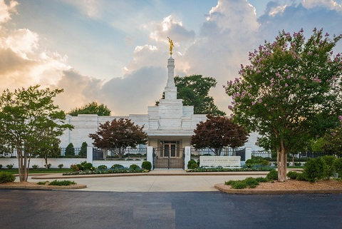

Temple Of The Month
"Memphis Tennesse"
The renovated Memphis Tennessee Temple of The Church of Jesus Christ of Latter-day Saints will be rededicated on Sunday, May 5, 2019.
Elder Jeffrey R. Holland of the Quorum of the Twelve Apostles will preside over the single 10:00 a.m. rededication session. Attendance to the session will be by invitation. The temple rededication session will not be broadcast to local meetinghouses, so the two-hour block of Sunday meetings will be held as planned.
Plans to construct the temple, located at 4199 Kirby-Whitten Parkway in Bartlett, Tennessee, were announced September 17, 1998, and Church leaders broke ground January 16, 1999. The temple was dedicated April 23, 2000, by President James E. Faust, then Second Counselor in the First Presidency of the Church. Latter-day Saints in Memphis; Little Rock, Arkansas; and Tupelo, Mississippi, are served by the temple.
The temple will be open for ordinances on Tuesday, May 14.